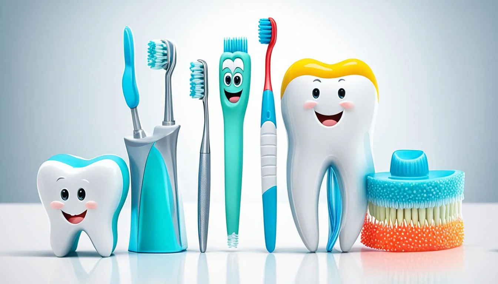

- Nettoyage Dentaire
- Examen Dentaire
- Orthodontie
- Implants Dentaires
- Blanchiment dentaire
- Facettes dentaire
- Gingivectomie
Nos Services
Conseils pour les Patients
Il est important de se brosser les dents deux fois par jour et d'utiliser du fil dentaire régulièrement.
Voici quelques conseils pour maintenir une bonne santé bucco-dentaire :
- Utiliser du fil dentaire quotidiennement.
- Limiter la consommation de sucre.
- Consulter votre dentiste régulièrement.